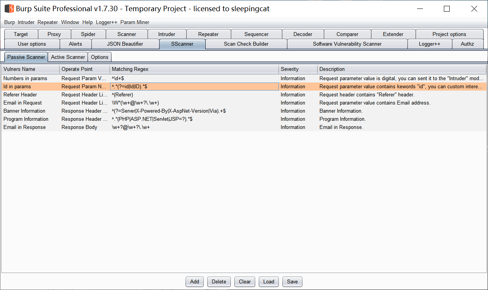
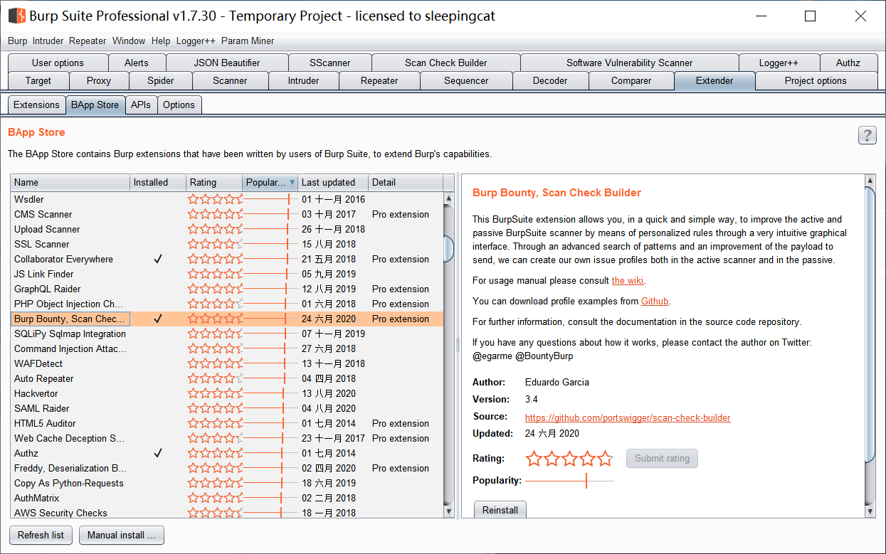
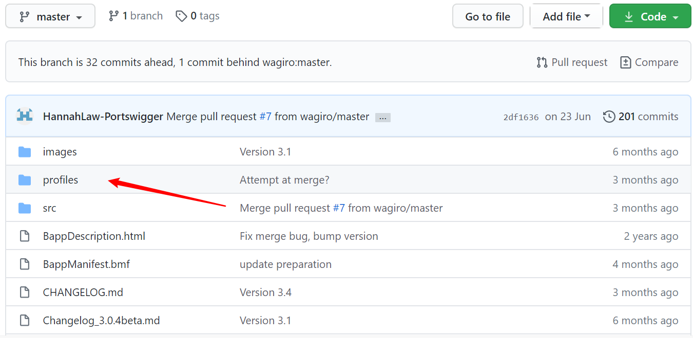
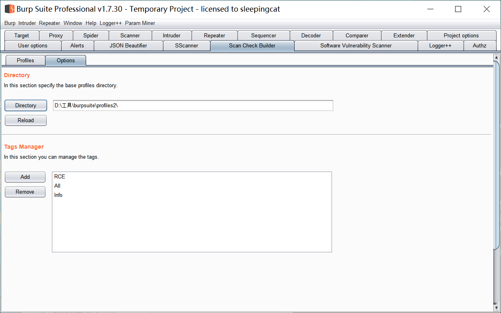
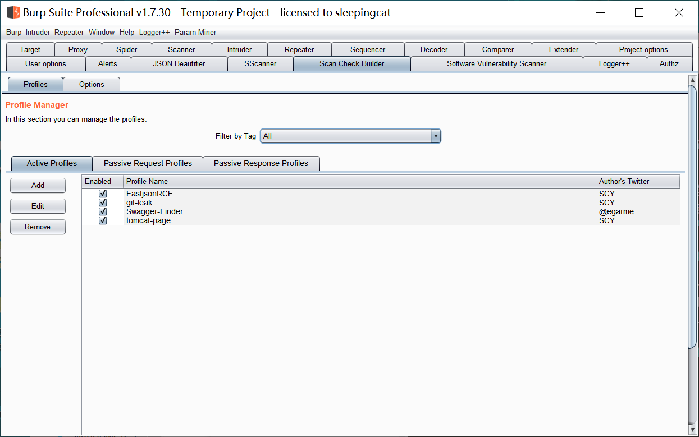
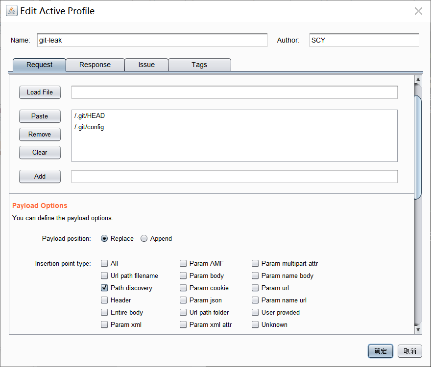
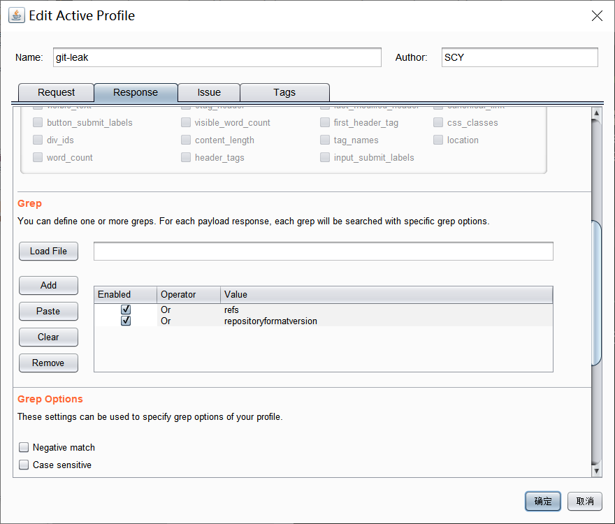
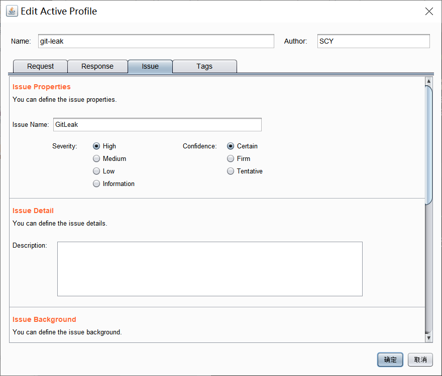
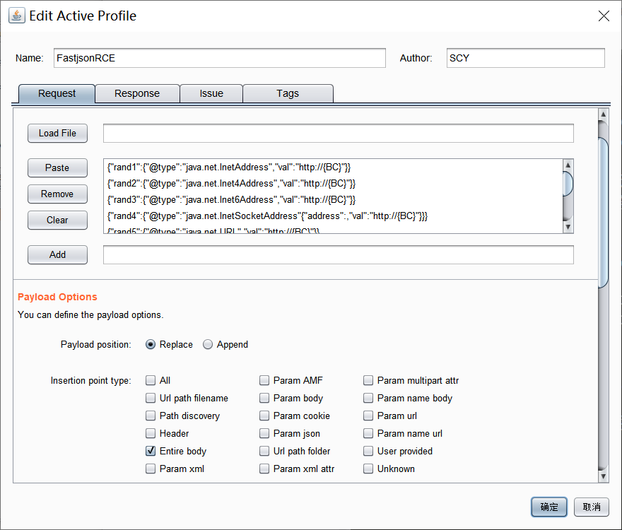
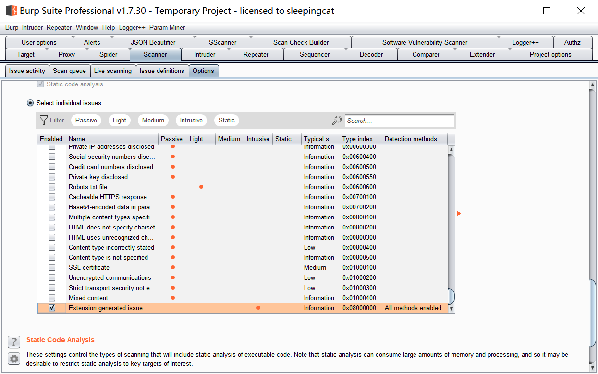

前言
BrupSuite作为Web渗透军火库里最流行的武器之一，其在国内使用的时候，总觉得有点水土不服。以致后来的像XRay之类的国内代理扫描也逐渐流行被广泛传播的时候，出现部分人感觉Burp扫描不行的感觉。
其实，在我看来，不是不行，底层原理都一样，只是它的规则是写死的，不支持自定义，导致很多时候出现的新漏洞无法及时覆盖，还有像国内的一些本土化的洞也覆盖不上。
所以，就萌生出一个想法，想写一个可以自定义规则的插件，用来扩展Burp，结合代理扫描一定会发现更多漏洞。而由于时间原因吧，断断续续已经过了3年，一日突然发现商店都上线了类似的插件，而且功能更强大，那还想什么呢，开始积累规则直接用吧！
原来的梦SScanner
原来有个梦，增强Burp的主动、被动扫描。在这记录下之前的插件，以后就只能尘封起来了

Scan Check Builder
这个插件整体还是不错的，虽然还是有点点不完美，但是几乎可以忽略了。
下载安装

使用
使用本来不想介绍太多，功能设计合理，基本是拿到即可上手。但是为了以后不犯傻，还是记录一下吧。
首先，是它的官网源码，默认下载下来是不带规则的，但是源码带。地址：https://github.com/portswigger/scan-check-builder

我们来看下Options，可以将下载的profiles进行导入。另外，每次改完策略，如果不生效可以点击Reload。TAG的话是POC分类标签，可以用来筛选。

主界面包含主动扫描、被动扫描配置，其中被动扫描分为请求、响应配置。

以Git信息泄露扫描为例，介绍下它的配置
请求配置，请求配置里注意插入点类型的选择，以及方式是替换还是附加。还有最重要的Payload。

响应配置，响应配置注意检测匹配的类型，大致分精确、模糊，正则、字符串。精确的会精确到如状态码等匹配。

问题配置，这个需要注意，不仅要命名，还有等级与准确度，一定要选，不然插件解析问题会导致不生效，当时排查这个问题还读了源码，花了好久。

还有个是FastjsonRCE的，这个比较特殊的是使用到了BC，{BC}在实际使用时，会被替换为burpcollaborator参数，通过DNS方式验证。

更多参数及配置请看插件。
附加
另外，介绍一点，因为自定义规则和自有规则重复，所以我们可以在Scanner模块的Options里只勾选Extension相关。

这样，就可以只扫描插件定义的问题啦。